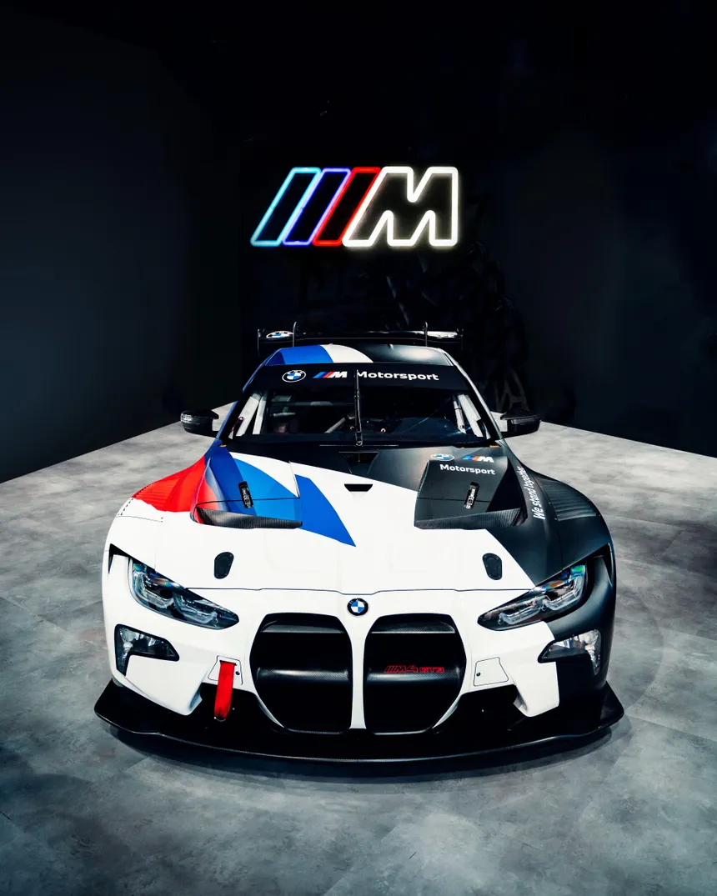

OUR HERITAGE
Bayerische Motoren Werke (BMW) was founded in 1916 in Munich, Germany, initially specializing in the production of aircraft engines. Known for engineering precision and innovation, BMW quickly established itself as a pioneer in high-performance technology. After World War I, the company transitioned into manufacturing motorcycles and automobiles, laying the foundation for what would become one of the world’s most iconic luxury automotive brands. The blue and white emblem represents the Bavarian flag and is often associated with a spinning aircraft propeller — a tribute to BMW’s aviation heritage.
The Birth of M
BMW Motorsport GmbH was officially established in 1972 to support BMW’s rapidly growing involvement in professional racing. The division was created to design, develop, and engineer high-performance vehicles that could dominate both track and road. The first major success came with the legendary BMW 3.0 CSL, which earned the nickname “Batmobile” due to its aerodynamic design and racing dominance. Over the years, BMW M evolved into a symbol of precision engineering, combining cutting-edge motorsport technology with everyday usability. Today, BMW M vehicles are recognized worldwide for their exceptional performance, dynamic handling and unmistakable design — representing the perfect fusion of luxury and motorsport DNA.

Key Milestones
- 1916 – BMW founded in Munich
- 1923 – First motorcycle (BMW R32)
- 1959 – Expansion into modern automobile production
- 1972 – BMW M Division established
- 1986 – Launch of the first BMW M3
- 2020s – Electrification and future mobility innovation